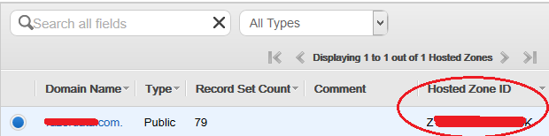

Route53¶
Terraform can use aws_route53_record resources to provide DNS records for your cluster.
In addition to the normal DNS variables, you will need to specify the hosted_zone_id parameter. You can find your own hosted zone ID in your AWS Route 53 console.
Route53 uses your normal Amazon Web Services provider credentials.
In your aws.tf, you will want to uncomment the aws-elb module:
# Example setup for an AWS Route53
module "route53" {
source = "./terraform/aws/route53/dns"
control_count = "${var.control_count}"
control_ips = "${module.control-nodes.ec2_ips}"
domain = "my-domain.com"
edge_count = "${var.edge_count}"
edge_ips = "${module.edge-nodes.ec2_ips}"
elb_fqdn = "${module.aws-elb.fqdn}"
hosted_zone_id = "XXXXXXXXXXXX"
short_name = "${var.short_name}"
subdomain = ".dev"
traefik_elb_fqdn = "${module.traefik-elb.fqdn}"
traefik_zone_id = "${module.traefik-elb.zone_id}"
worker_count = "${var.worker_count}"
worker_ips = "${module.worker-nodes.ec2_ips}"
}
This module assumes you set-up an ELB, if not you will need to comment out the ELB section and references in the module.